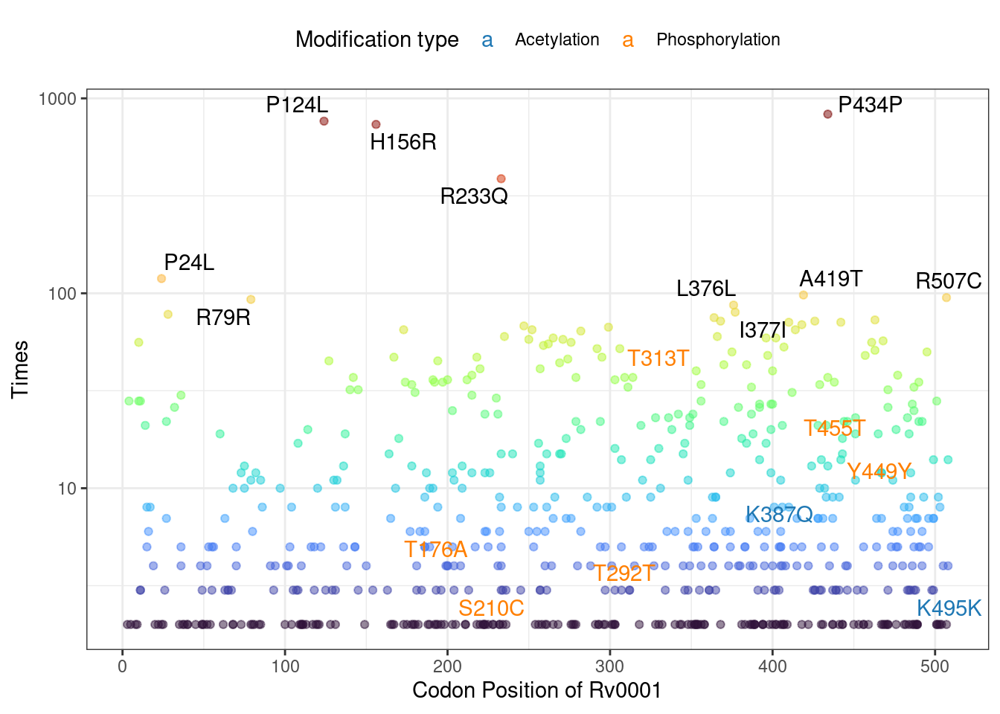
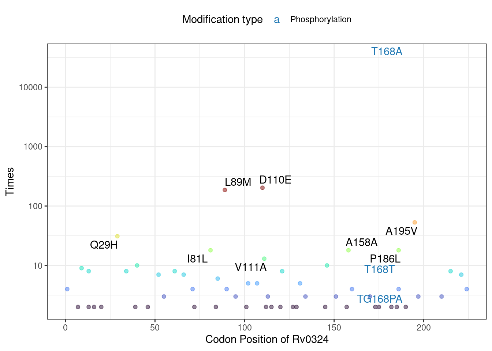

Chapter 6 Multi-omics Integration for Discovery of Non-neutral Mutations
Post-Translational Modification (PTM) omics Analysis have identified many PTM sites in pathogens.
Here we demonstrate the application of our package through acetylation proteomics (Xie et al. (2015)) of Mtb conducted by our lab, as well as leveraging recently published O-phosphorylation proteomics data (Frando et al. (2023)). We rapidly identify positively selected phosphorylation sites during evolution.
# The data file must contain at least two required columns: GENE/LOCUS_TAG and AA_POS (amino acid position)
# Load experimentally validated phosphorylation sites
pho_info <- read.csv("example/Mtb_pho.csv")
# Load experimentally validated acetylation sites
ace_info <- read.csv("example/Mtb_ace.csv")
# Using the AddModificationInfo function, we integrate PTM information into the mutation data. This step annotates whether each mutation occurs at known PTM sites.
Mtb_mut <- AddModificationInfo(Mtb_mut,
modification_dt = ace_info,
type = "Acetylation")## Add Acetylation info to MutationObject## Add Phosphorylation info to MutationObject# The enhanced mutation annotation now includes two new columns:
# Acetylation: Indicates if the site is a known acetylation site
# Phosphorylation: Indicates if the site is a known phosphorylation site
Mtb_mut$snp_list$snp_anno %>% head()## CHROM POS TYPE FTYPE STRAND NT_POS AA_POS
## A8Csnp NC_018143 8 snp CDS + 8/1524 3/507
## G10Csnp NC_018143 10 snp CDS + 10/1524 4/507
## A11Csnp NC_018143 11 snp CDS + 11/1524 4/507
## C12Tsnp NC_018143 12 snp CDS + 12/1524 4/507
## C15Tsnp NC_018143 15 snp CDS + 15/1524 5/507
## G16Csnp NC_018143 16 snp CDS + 16/1524 6/507
## EFFECT LOCUS_TAG_NEW GENE
## A8Csnp missense_variant c.8A>C p.Asp3Ala RVBD_RS00005 dnaA
## G10Csnp missense_variant c.10G>C p.Asp4His RVBD_RS00005 dnaA
## A11Csnp missense_variant c.11A>C p.Asp4Ala RVBD_RS00005 dnaA
## C12Tsnp synonymous_variant c.12C>T p.Asp4Asp RVBD_RS00005 dnaA
## C15Tsnp synonymous_variant c.15C>T p.Pro5Pro RVBD_RS00005 dnaA
## G16Csnp missense_variant c.16G>C p.Gly6Arg RVBD_RS00005 dnaA
## PRODUCT AA_effect_short
## A8Csnp chromosomal replication initiator protein DnaA D3A
## G10Csnp chromosomal replication initiator protein DnaA D4H
## A11Csnp chromosomal replication initiator protein DnaA D4A
## C12Tsnp chromosomal replication initiator protein DnaA D4D
## C15Tsnp chromosomal replication initiator protein DnaA P5P
## G16Csnp chromosomal replication initiator protein DnaA G6R
## LOCUS_TAG INDEX Acetylation Phosphorylation
## A8Csnp Rv0001 A8Csnp NA NA
## G10Csnp Rv0001 G10Csnp NA NA
## A11Csnp Rv0001 A11Csnp NA NA
## C12Tsnp Rv0001 C12Tsnp NA NA
## C15Tsnp Rv0001 C15Tsnp NA NA
## G16Csnp Rv0001 G16Csnp NA NA# Filter mutations occurring at phosphorylation sites
Mtb_mut$snp_list$snp_anno %>% filter(Phosphorylation==T) %>% head()## CHROM POS TYPE FTYPE STRAND NT_POS AA_POS
## A526Gsnp NC_018143 526 snp CDS + 526/1524 176/507
## C527Tsnp NC_018143 527 snp CDS + 527/1524 176/507
## C629Gsnp NC_018143 629 snp CDS + 629/1524 210/507
## C630Tsnp NC_018143 630 snp CDS + 630/1524 210/507
## C630Gsnp NC_018143 630 snp CDS + 630/1524 210/507
## C876Gsnp NC_018143 876 snp CDS + 876/1524 292/507
## EFFECT LOCUS_TAG_NEW GENE
## A526Gsnp missense_variant c.526A>G p.Thr176Ala RVBD_RS00005 dnaA
## C527Tsnp missense_variant c.527C>T p.Thr176Met RVBD_RS00005 dnaA
## C629Gsnp missense_variant c.629C>G p.Ser210Cys RVBD_RS00005 dnaA
## C630Tsnp synonymous_variant c.630C>T p.Ser210Ser RVBD_RS00005 dnaA
## C630Gsnp synonymous_variant c.630C>G p.Ser210Ser RVBD_RS00005 dnaA
## C876Gsnp synonymous_variant c.876C>G p.Thr292Thr RVBD_RS00005 dnaA
## PRODUCT AA_effect_short
## A526Gsnp chromosomal replication initiator protein DnaA T176A
## C527Tsnp chromosomal replication initiator protein DnaA T176M
## C629Gsnp chromosomal replication initiator protein DnaA S210C
## C630Tsnp chromosomal replication initiator protein DnaA S210S
## C630Gsnp chromosomal replication initiator protein DnaA S210S
## C876Gsnp chromosomal replication initiator protein DnaA T292T
## LOCUS_TAG INDEX Acetylation Phosphorylation
## A526Gsnp Rv0001 A526Gsnp NA TRUE
## C527Tsnp Rv0001 C527Tsnp NA TRUE
## C629Gsnp Rv0001 C629Gsnp NA TRUE
## C630Tsnp Rv0001 C630Tsnp NA TRUE
## C630Gsnp Rv0001 C630Gsnp NA TRUE
## C876Gsnp Rv0001 C876Gsnp NA TRUEThe MutNumPlot function enables visualization of mutation frequency distribution for specific genes, with PTM sites highlighted. This visualization helps identify key mutations that may affect protein post-translational modifications.
# Visualize mutation frequency distributions
# PTM sites (acetylation and phosphorylation) are highlighted with special colors
Mtb_mut$MutNumPlot("Rv0001",Modification = c("Acetylation","Phosphorylation"))

Importantly, we have experimentally demonstrated mutation of a phosphosite in Rv0324, T168A, partially rescued growth arrest during overexpression of Rv0324 in Mycobacterium semgmatis, the vanguard of mycobacterial research. This result hightlight the practicality of this simple function.